CNSP 2025 Hackathon: Outcomes
This page reports on the outcomes of the CNSP 2025 Hackathon. Four groups worked over the course of the event, each supervised by a member of the CNSP team, tackling a different question in cognitive, natural and sensory processing research. Below you will find a summary of each group's project, the participants involved, the publications that came out of the workshop, a table of project outputs (code and repositories), and a gallery of photos from the event.
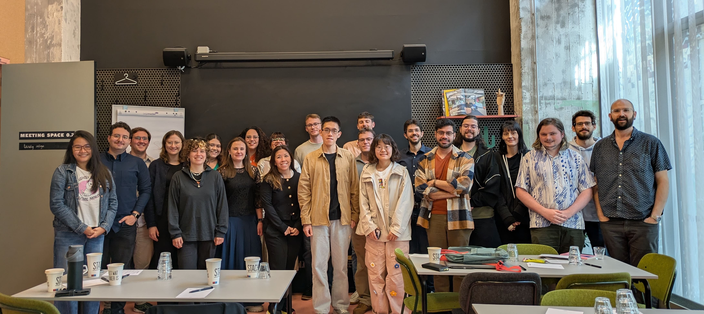
All CNSP2025 hackathon participants and organisers.
Projects
fNIRS New Technology
The CNSP activities have focused on methods for studying the neurophysiology of continuous sound processing, especially for speech and music. While our work has primarily used EEG and MEG, we explored extending this research to more realistic social-interaction scenarios by measuring neural processing of continuous speech with an emerging technology: fNIRS hyperscanning.
We partnered with Artinis Medical Systems to make the experiment possible. The company provided eight fNIRS devices, supported preliminary setup before the hackathon, and contributed expertise during the workshop, including a tailored fNIRS tutorial at the start of the event.
fNIRS complements EEG hyperscanning (see the relevant workgroup) by offering superior spatial resolution at the cost of lower temporal resolution. As a first step, we ran a co-presence listening task using pre-recorded podcast material previously used in an EEG study (Ip, Akkaya et al., bioRxiv, 2026). The experiment worked on the first attempt without technical issues, leaving most of the hackathon for data analysis. This allowed us to adapt CNSP resources into an end-to-end analytic pipeline tailored to fNIRS and fNIRS hyperscanning.
The collaborative effort was organised into subgroups covering literature review, data preparation and standardisation, TRF analysis, data visualisation, and other technical tasks. A separate subgroup explored a new bluesky experimental music paradigm and contributed analytic resources that were adopted by the core project. Ping-pong also played a key role during the hackathon.
We finalised the results in the weeks after the hackathon and have submitted a journal manuscript. Please find the preprint here. The CNSP organisers congratulate all workgroup members for their enthusiasm and hard work, which produced a tangible and valuable outcome in a short time.
Group members: Jaimy Hannah, Johanna Wilroth, Bonnie Lau, Bruno de Avo Mesquita, Ali Tafakkor, John O’Doherty, Giovanni Di Liberto (CNSP)
Open Science
Originally, our goal was to identify a standardized EEG data format that would facilitate data sharing for TRF-style analyses in experiments involving continuous stimulus presentations. We quickly realized that establishing a new standard would require effort beyond the scope of the hackathon, including community advocacy and adoption. Instead, we chose to extend the existing BIDS standard to support continuous stimuli in a structure that simplifies trial extraction and alignment.
We then developed a proof-of-concept toolbox that loads data in this format for TRF-style analysis. In parallel, the same data structure can be used to infer experimental parameters and simulate datasets, allowing researchers to assess the effects of signal-to-noise ratio on analysis outcomes and reliability. Together, these capabilities provide a valuable open science resource for evaluating statistical power and streamlining data extraction for further analysis.
Group members: Kaja Benz, Mike Thornton, Constantin Jehn, Nate Zuk (CNSP)
EEG Hyperscanning
In the hyperscanning group, we explored idea of brain synchrony between individuals involved in a common social activity such as watching a movie together or having a conversation. We considered to what extent measures of synchrony could be related to the common sensory environment and how to account for those effects both analytically and experimentally. Several members of the group explored ways to isolate the social effects on brain synchrony to different aspects of the neural signal – for example, acoustic, phonetic, or semantic processing. Several members of the group have maintained the discussion beyond the workshop in Maastricht and continue to have those conversations.
Group members: Amir Chalehchaleh, Pablo Ochoa de Eribe Delgado, Calli Smith, Suong Welp, Talat Jabeen, Diya Yi, Shunkai Wang, Maiwenn Fleig, Vivien Barchet, Aaron Nidiffer (CNSP)
Methods
Our group worked on two projects. The first project applied the TRF modelling and preprocessing pipeline developed by the fNIRS New Technology group to a new question: how does brain synchrony in people singing together compare with that in people speaking together? Three of us wore fNIRS caps covering temporal and prefrontal areas and performed “Jingle Bells”, a well-known Christmas carol. The singing and reading conditions each consisted of one group block followed by three solo blocks in which one person performed while the other two listened passively. Based on previous literature, we hypothesized greater inter-brain synchrony during speaking than singing, greater synchrony between passive listeners than between performer and listener, and greater synchrony during tasks than at rest. We extracted speech-envelope TRFs, but they were quite noisy, likely because of short recordings. Inter-brain correlation and wavelet coherence showed the expected patterns in some channels, but these channels were selected post hoc. While our results were inconclusive, we showed that hyperscanning fNIRS experiments with naturalistic speech and singing are feasible and can address many open questions about music production and processing.
The second project addressed the potential role of non-linearity in TRF modelling. Nima explored this question using two approaches. In the first, he fit the best linear TRF to an EEG speech dataset (LalorNatSpeech) and trained an LSTM-based RNN on residuals, which gave no meaningful improvement over the linear model. In the second, he began exploring biologically plausible subcortical auditory models (e.g., from the Auditory Modeling Toolbox and a multiscale spectro-temporal auditory model) as non-linear stimulus features ahead of a linear TRF. This approach requires access to raw audio, with downsampling only at the last stage before TRF fitting, which has implications for the CND format. His results suggest that TRFs may be stronger with representations from such deterministic auditory models as stimulus features, a hypothesis to test in future work.
Group members: Nancy Sotero, Cindy Zhang, John O’Doherty, Nima Zargarnezhad, Magdalena Kachlicka (CNSP)
CNSP Hackathon Awards
We are pleased to announce this year's hackathon awards, all generously funded by Artinis. Thank you to Artinis for their support, and congratulations to all awardees!
- 1st prize for best hackathon participant: Johanna Wilroth (Linköping University)
- 2nd prize for best hackathon participant: Nancy Sotero (Bielefeld University)
- Artinis travel grant: Diya Yi (Chinese Institute for Brain Research)
- Recognition award for best student support during the hackathon: John O'Doherty (Trinity College Dublin)
Publications
The following publications resulted from, or were inspired by, work carried out during the CNSP 2025 Hackathon:
- Wilroth, J., Sotero Silva, N., Tafakkor, A., de Avo Mesquita, B., Ip, E. Y. J., Lau, B., Hannah, J., & Di Liberto, G. M. (2026). Investigating neural speech processing with functional near infrared spectroscopy: considerations for temporal response functions. bioRxiv.
Photo gallery
A few snapshots from the CNSP 2025 Hackathon.
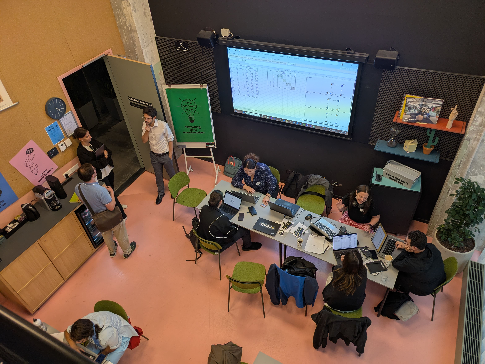
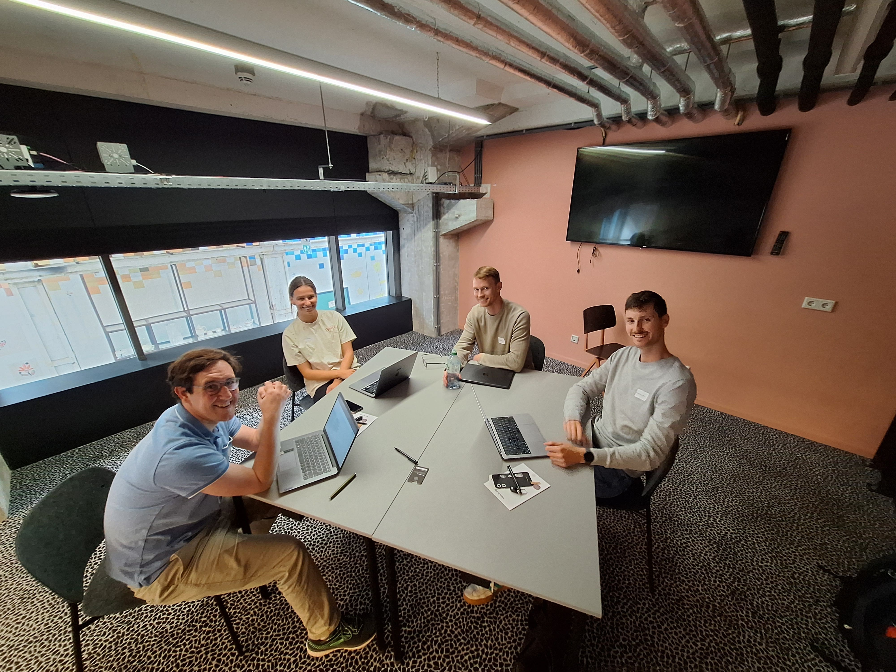
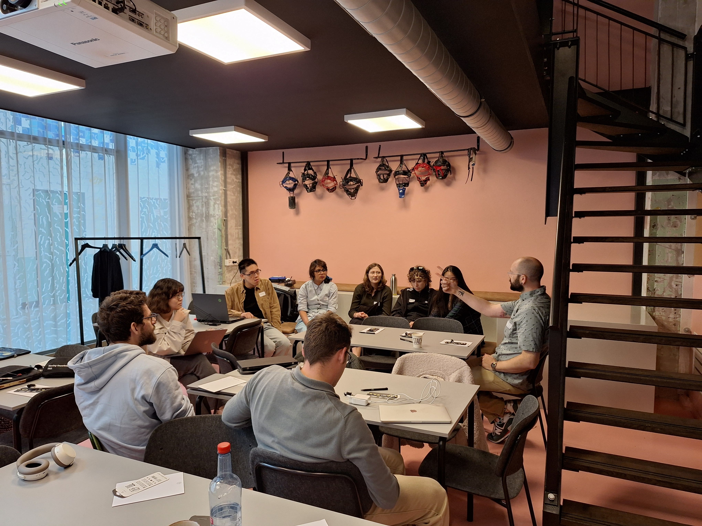
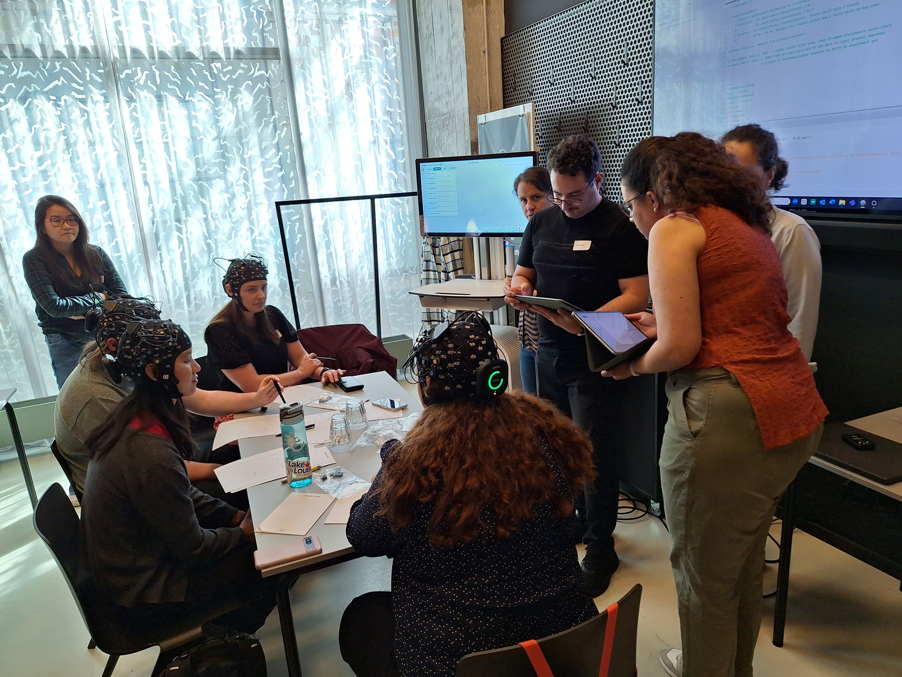
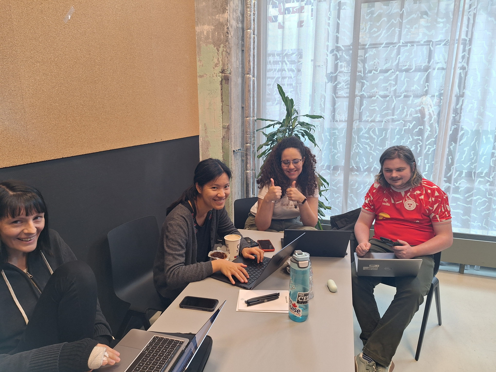
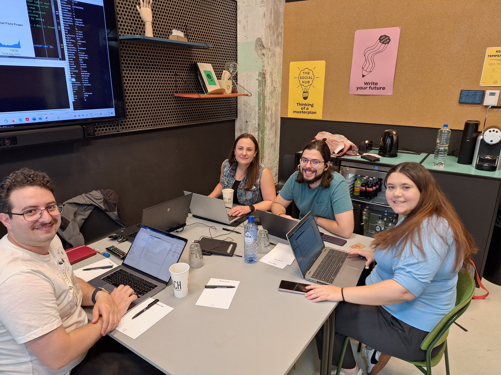
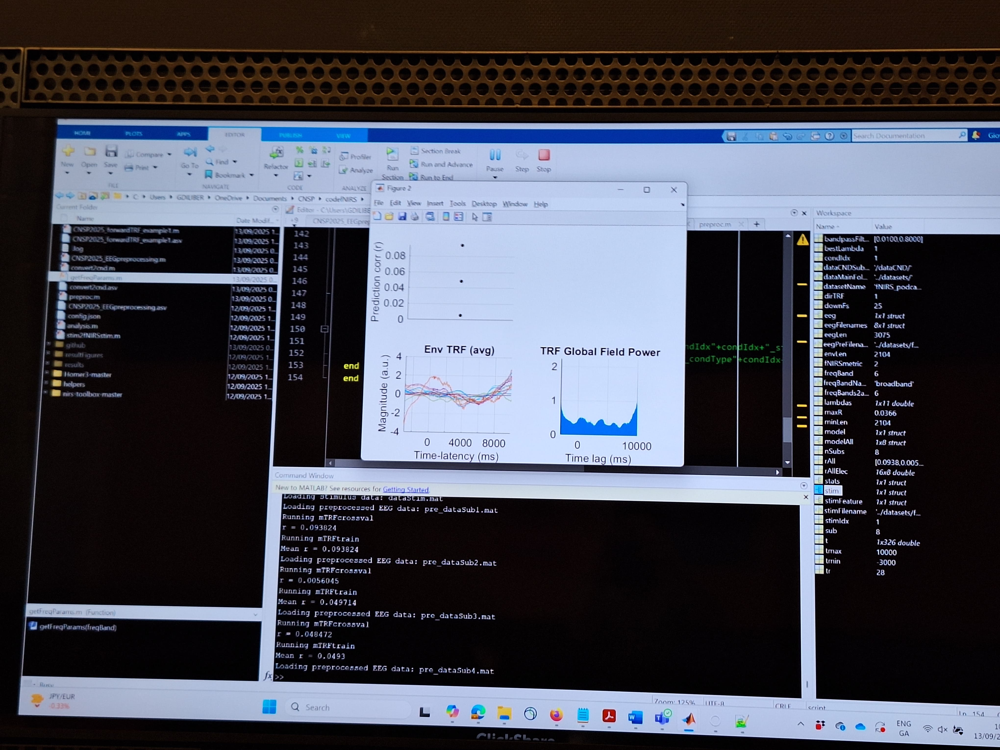
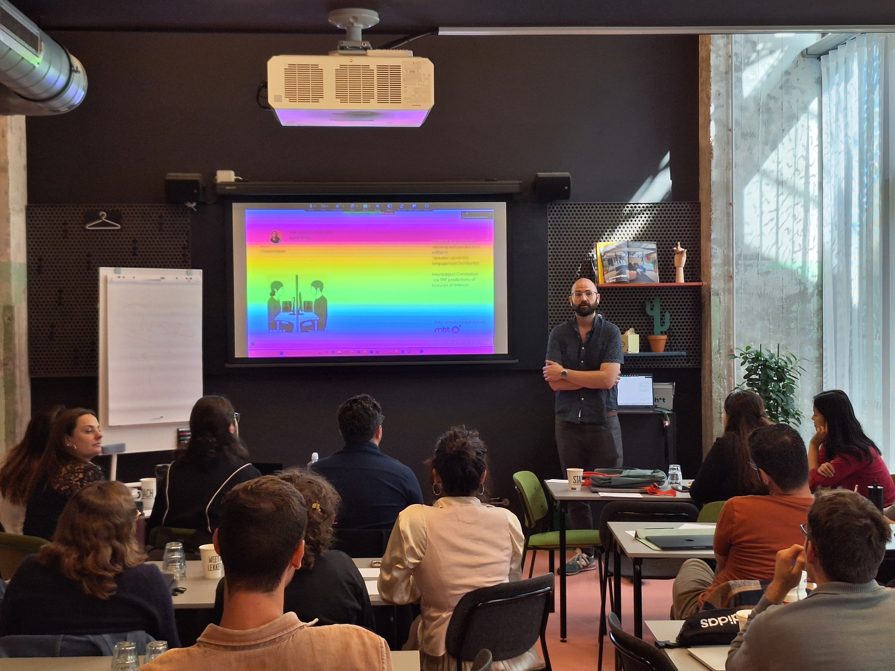
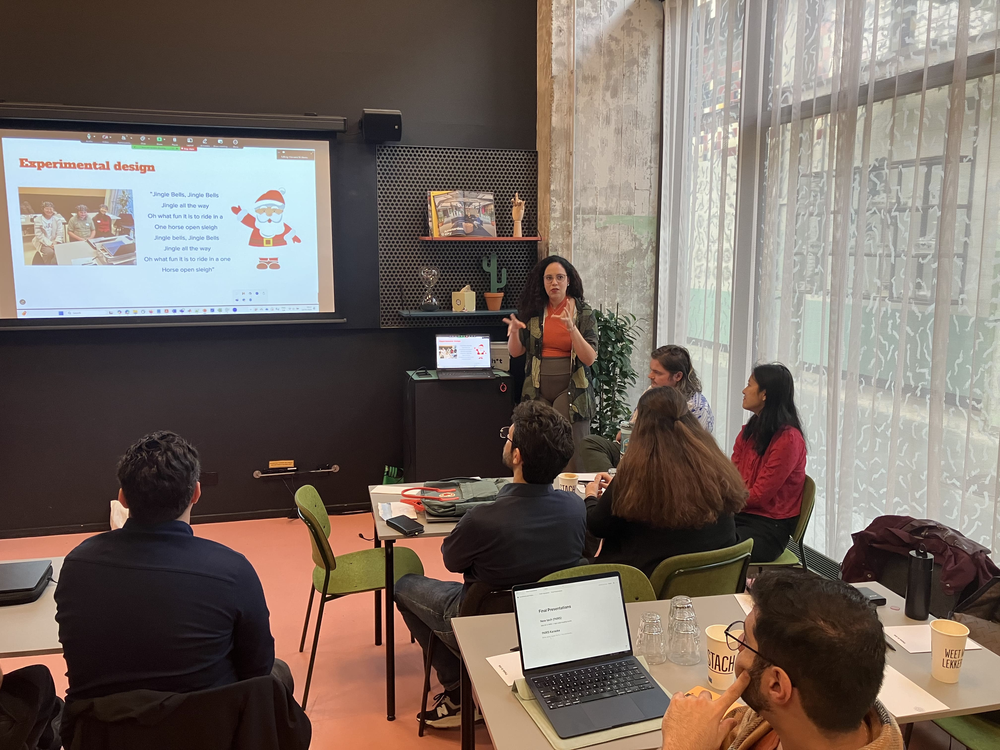
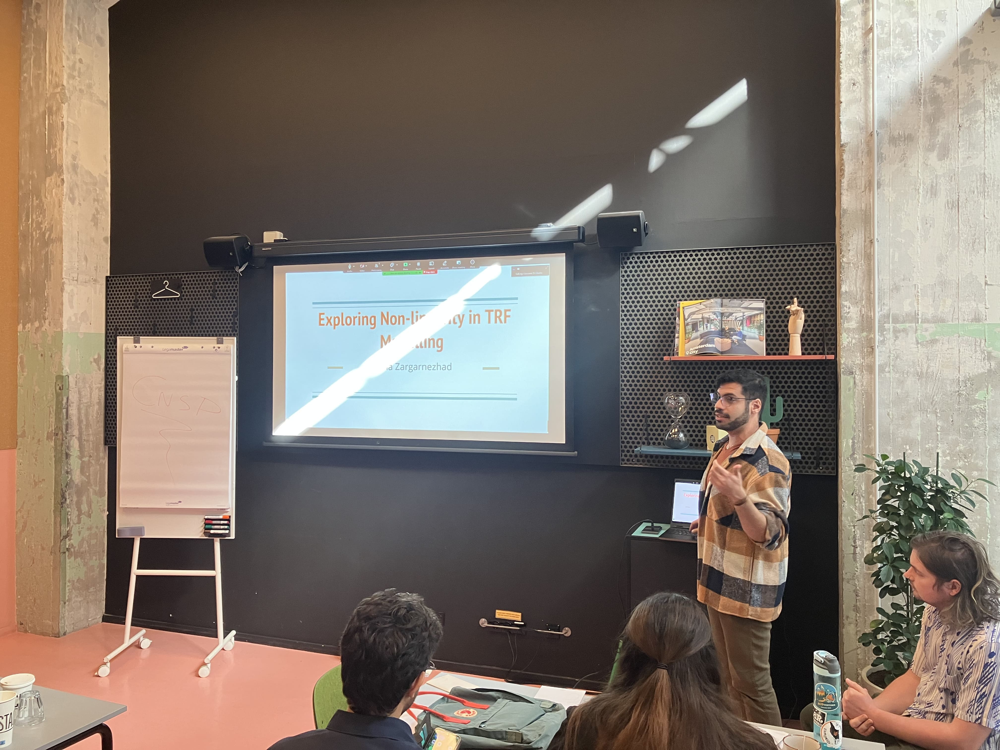
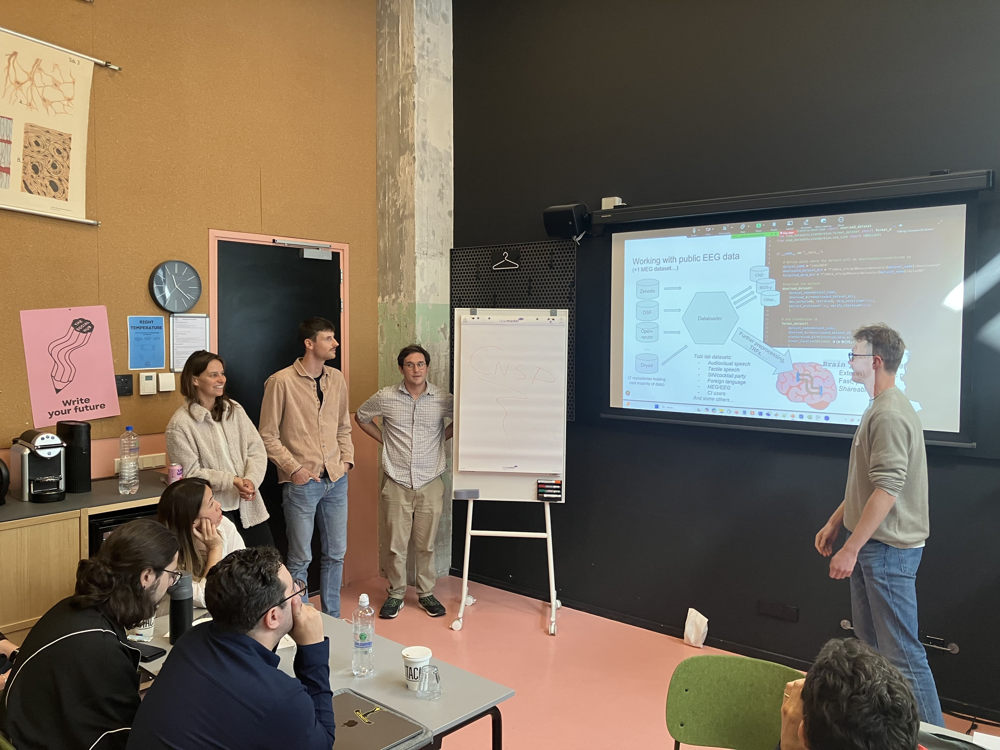
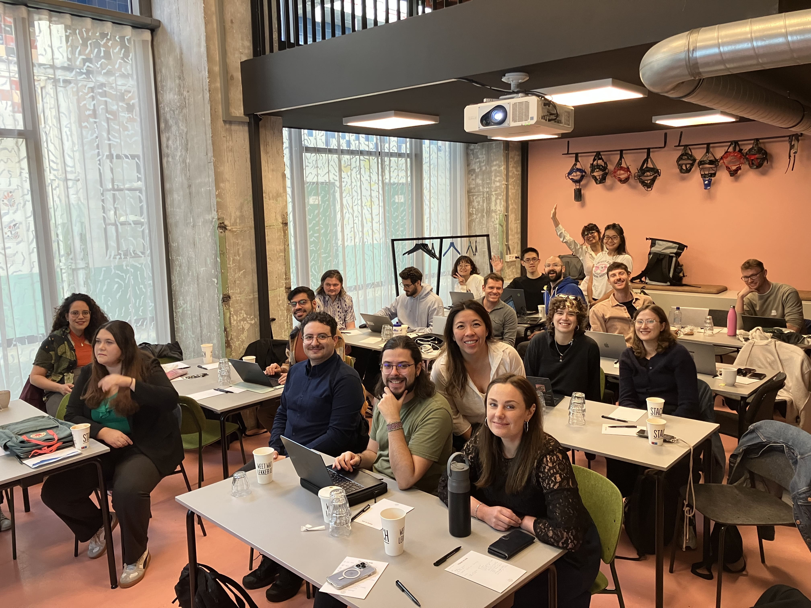